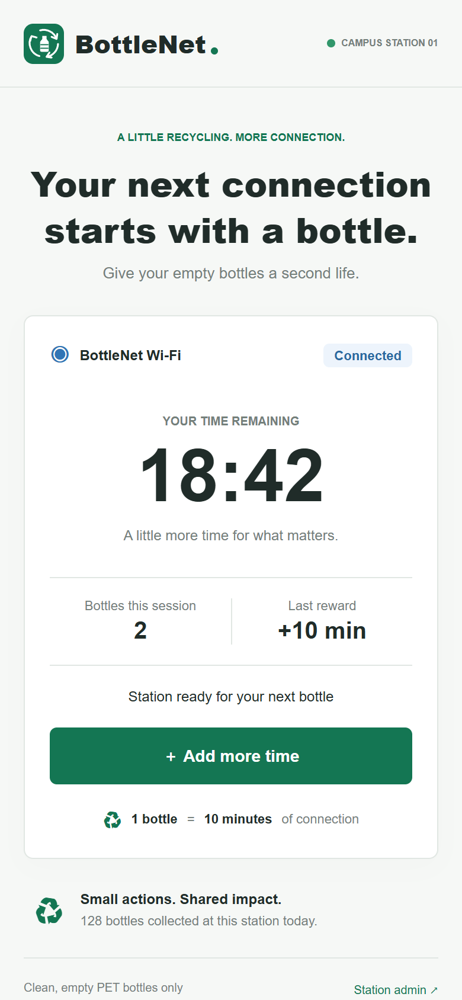
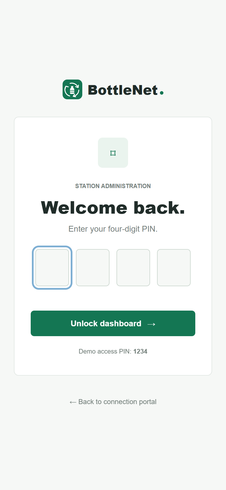
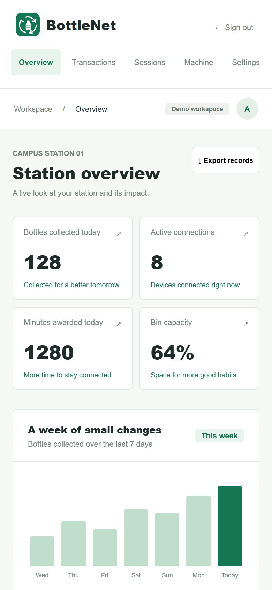

BottleNetMOBILE INTERFACE
Deposit plastic bottles. Get free Wi-Fi.
Connection portal
Time, rewards, and your next bottle.

Admin access
A focused, four-digit PIN entry.

Station dashboard
Collection and connectivity at a glance.
